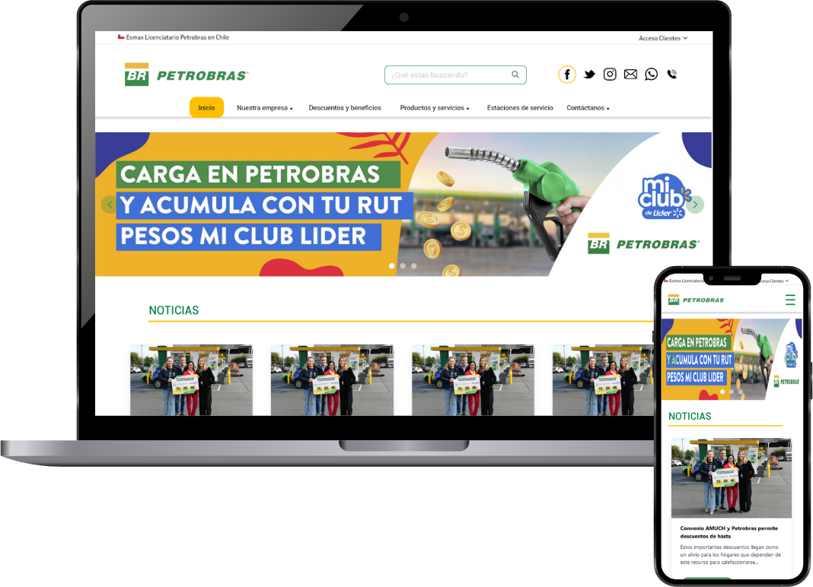
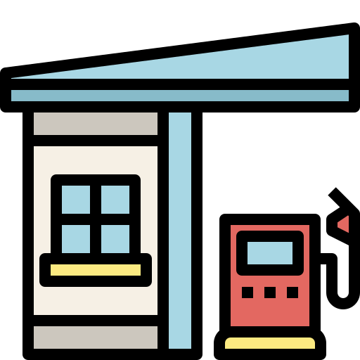
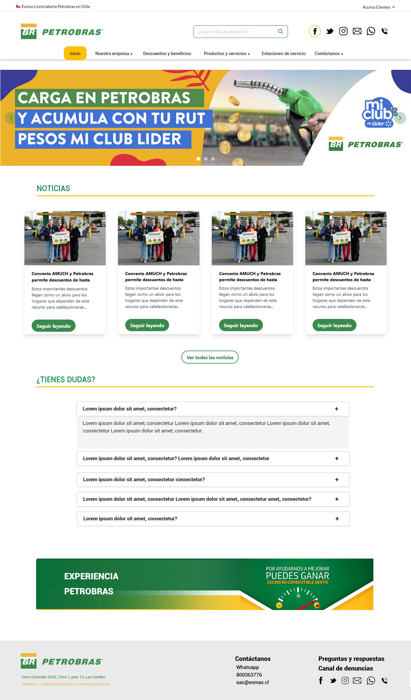
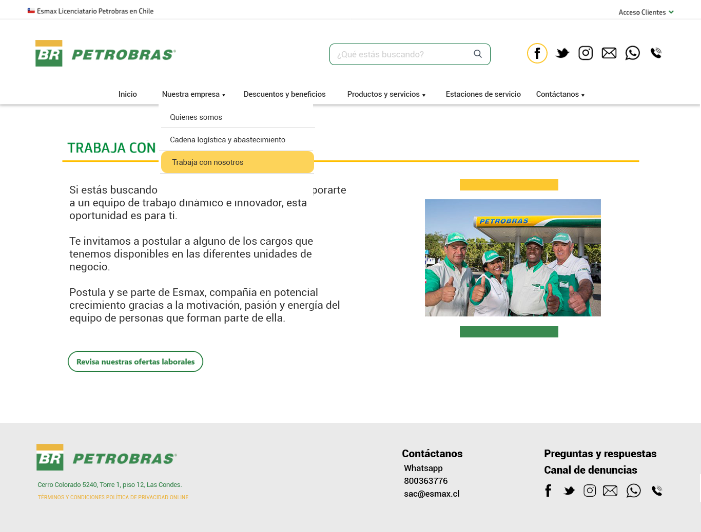
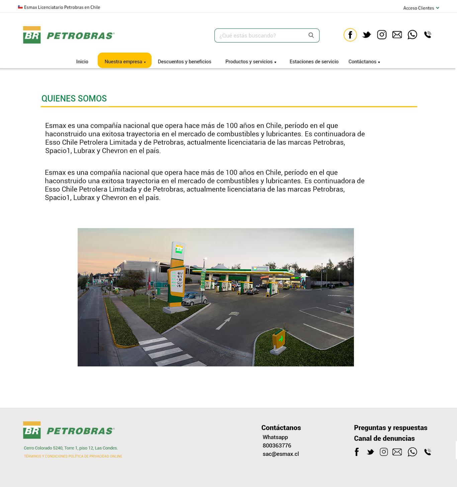
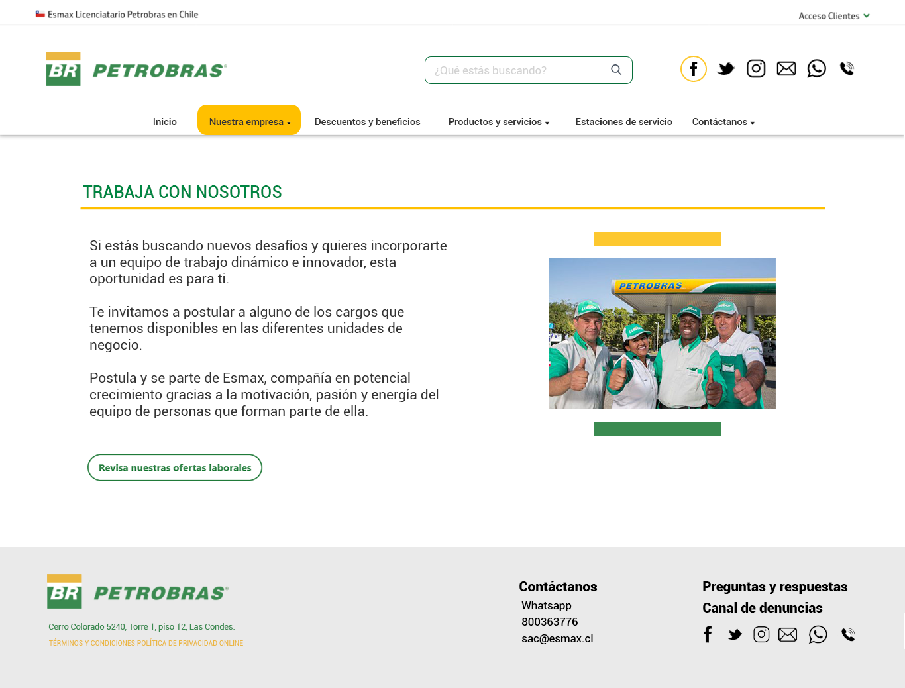
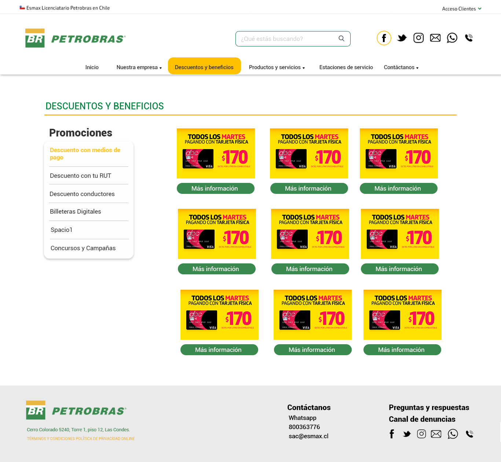
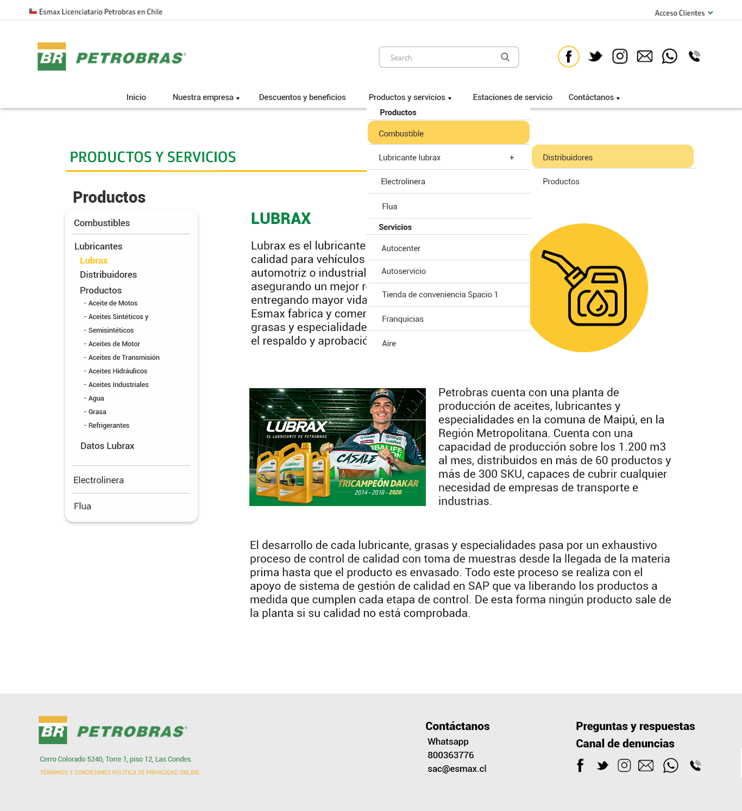

Rediseño del sitio web — UX / UI

Acerca del proyecto
Rediseño conceptual del sitio web de Petrobras enfocado en mejorar la
claridad visual, la jerarquía de información y la experiencia de navegación
del usuario.
El proyecto explora una propuesta de interfaz más moderna y
organizada, priorizando la legibilidad del contenido y una estructura más
clara para acceder a las distintas secciones del sitio.

Contexto
El sitio original presentaba una gran cantidad de información distribuida en múltiples secciones, lo que podía dificultar la navegación y la comprensión rápida del contenido.
El objetivo de este ejercicio fue proponer un rediseño que organizara mejor la información, mejorara la jerarquía visual y modernizara la interfaz manteniendo la identidad de la marca.
Mi Rol
En este proyecto participé en la propuesta de rediseño de interfaz del sitio web.
Responsabilidades principales:
- Análisis visual del sitio existente
- Propuesta de nueva estructura de interfaz
- Rediseño de componentes y secciones principales
- Organización de contenido para mejorar la jerarquía visual
Diseño de interfaz
El rediseño se centró en:
- Mejorar la jerarquía tipográfica
- Organizar mejor los bloques de contenido
- Simplificar la navegación
- Modernizar la presentación visual del sitio
Se trabajó en una propuesta de interfaz más limpia y estructurada, facilitando el acceso a la información principal y mejorando la experiencia de navegación.






Herramientas
- Figma
- UI Design
- Wireframing
- Prototyping
Se trabajó en una propuesta de interfaz más limpia y estructurada, facilitando el acceso a la información principal y mejorando la experiencia de navegación.
Resultado
El proyecto presenta una propuesta de rediseño del sitio web enfocada en mejorar la claridad visual, la organización de la información y la experiencia general del usuario.
La nueva interfaz busca facilitar la navegación del sitio y ofrecer una presentación más moderna y ordenada del contenido.